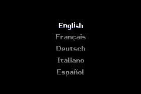

WarioWare, Inc. - Minigame Mania (Europe) (En,Fr,De,Es,It) (Virtual Console)
SRAM 256K Save Format Mapped (Family Spec) gbakit Built-In 💾 MultiBoot
Cartridge Identity
- Game Code
AZWP(FamilyAZW)- Header Title
WARIOWAREINC- Maker / Revision
01/ rev0- ROM Size
- 8.0 MiB (8,388,608 B)
- Save Media
SRAM 256K- SHA-256
30b34d3089e462db39428b17a2baa49ecfc0b4dc77ef69ab5e60af3a08926124
Screenshots


Link Cable & Multiplayer Communications
This title contains detected communication capabilities: 💾 MultiBoot.
Detailed protocol specifications, SIO registers, Joybus commands, and MultiBoot sequences are documented in the Link & Multiplayer Reference.
- Single-Cart MultiBoot
- Single-Cartridge MultiBoot (Download Play) client/server handler · Thumb SWI 0x25 (
0xDF25):0x15f43e,0x182ab8,0x1c7e2e,0x1d8c6a
Battery Save Format Specification (Family Shared)
This release shares its save architecture with canonical family reference WarioWare, Inc. - Minigame Mania (Europe) (En,Fr,De,Es,It) (Family
AZW).
Open Family Save Format Spec (AZWP)Download save-format.json
- Canonical Specification
AZWP· 19 mapped fields · 1 verified checksum(s) · Confidence: MEDIUM- gbakit Built-In Support
- Built-in (AZWP)
gbakit save verify AZWP save.sav
gbakit save decode AZWP save.sav
gbakit save fix AZWP damaged.sav -o repaired.savObserved Battery Save Layout
- Fill Byte & Active Size
0xFFfill · 1,028–2,056 / 32,768 B active (entropy 1.13 bits/B)- Active Offset Ranges
0x0–0x403,0x4000–0x4403(2 total)- ASCII Magic / Headers
- None detected
- Observed Variable Regions
- 1,028 bytes across 1 spans:
0x0–0x403 - Candidate Checksum/Counter Spans
- None
Text, Fonts & Scene Data
- Primary Text Encoding
- Shift-JIS (uncompressed) (
29ASCII strings ·200Shift-JIS runs) - Font & VWF Indicators
- VWF Width Table 1bpp Font · BIOS SWIs: BitUnPack
0x10:10· LZ770x11/12:9· Huffman0x13:14· RLE0x14/15:7 - Scene & Packaging
77ROM pointer tables (≥32 entries,4≥200) ·4relativeu32TOCs ·398OAM metasprite hits · FourCC:MThd
Hardware MMIO Subsystems
ppu_display0x8000f8c,0x8006ac4,0x8006b2c,0x8009b70,0x800dd00
Regional Variants & Revisions (Family AZW)
- Made in Wario (Japan) (
AZWJ, 8 MiB) - Made in Wario (Japan) (Demo) (Kiosk, GameCube) (
AZWJ, 8 MiB) - Made in Wario (Japan) (Virtual Console) (
AZWJ, 8 MiB) - Waliou Zhizao (China) (
AZWC, 8 MiB) - WarioWare, Inc. - Mega Microgame$! (USA) (
AZWE, 8 MiB) - WarioWare, Inc. - Mega Microgame$! (USA) (Beta) (
AZWE, 8 MiB) - WarioWare, Inc. - Mega Microgame$! (USA) (Virtual Console) (
AZWE, 8 MiB) - WarioWare, Inc. - Minigame Mania (Europe) (En,Fr,De,Es,It) (
AZWP, 8 MiB)